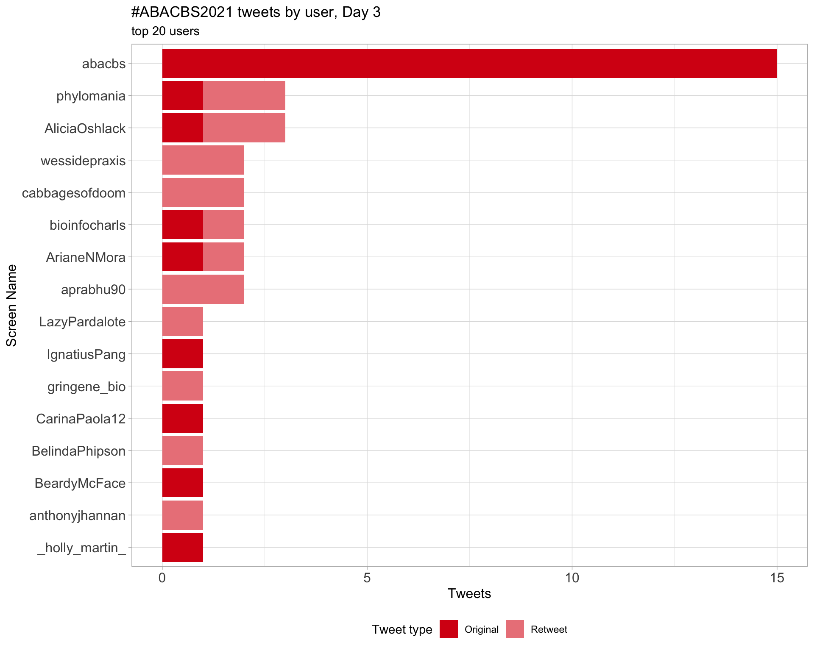

ABACBS2021
ABACBS Conference 2021
Last built: 2021-11-26 17:04:32
| Parameter | Value |
|---|---|
| hashtag | #ABACBS2021 |
| start_day | 2021-11-23 |
| end_day | 2021-11-25 |
| timezone | Australia/Sydney |
| theme | theme_light |
| accent | #d70a14 |
| accent2 | #EB8489 |
| kcore | 2 |
| topics_k | 6 |
| bigram_filter | 3 |
| fixed | TRUE |
| seed | 1 |
Introduction
An analysis of tweets for the query #ABACBS2021 related to ABACBS Conference 2021 from 2021-11-23 to 2021-11-25. A total of 222 tweets from 76 users were collected using the {rtweet} R package.
1 Timeline
1.1 Tweets by day
1.2 Tweets by day and time
Filtered for dates 2021-11-23 - 2021-11-25 in the Australia/Sydney timezone.
2 Users
2.1 Top tweeters
Overall
Original
Retweets
2.2 Retweet proportion
2.3 Top tweeters timeline

2.4 Top tweeters by day
Overall
Day 1
Day 2
Day 3

Original
Day 1
Day 2
Day 3
Retweets
Day 1
Day 2
Day 3
3 Sources
Users
Tweets
4 Networks
4.1 Replies
The “replies network”, composed from users who reply directly to one another, coloured by PageRank.
4.2 Mentions
The “mentions network”, where users mention other users in their tweets. Filtered for a k-core of 2. Node colour and size adjusted according to PageRank score.
5 Tweet types
5.1 Retweets
Proportion
Count
Top 10
| screen_name | text | retweet_count |
|---|---|---|
| AusBiocommons | If you can find a quiet moment during #ABACBS2021 #Phylomania and you’re into single cell omics, please complete our short survey about what research infrastructure you need. We’ll work with our partners to try to ease your #Bioinformatics pain points https://t.co/7ZgozOJC4a https://t.co/tkXr8C38Sx | 7 |
| AliciaOshlack | We have come a long way since this was newsworthy. I love it that it’s now so accepted to have kids interrupting meetings and talks #ABACBS2021 https://t.co/tPAnA6q0pe | 4 |
| AliciaOshlack |
Congratulations to Andreas Halman from my group who won best poster at #ABACBS2021 For his work on STRipy: Genotyping pathogenic STRs. I think you can see why he won… Publication: https://t.co/qNEw6nFIdq https://t.co/JI8am2YQMj |
4 |
| abacbs |
Outstanding PhD thesis award 2021 goes to @Hasindu2008 Congratulations!! #ABACBS2021 #combine21 |
4 |
| methylnick | Mindblown. Multiscale PHATE, isn’t maths beautiful? I just don’t have the brain to understand the formulae #notonlyabioinformatician #ABACBS2021 @abacbs Smita Krishnaswamy giving a stellar plenary. Is it time to jump on the single cell bandwagon? @MonashBioinfo Topological Viz https://t.co/80zj7wFuqJ | 4 |
| dr_njarmstrong |
Up now @pabloacera91 detecting RNA methylation using Nanopore sequencing #ABACBS2021 |
4 |
| PhilippBayer | The Perth #COMBINE21 and #ABACBS2021 hub is up and running! Streaming talks from 8am-ish most days this week. There’ll be lunch today and tomorrow, with morning tea courtesy of @dr_njarmstrong :) https://t.co/8lltT3sMnG | 4 |
| ArianeNMora | Great invited talk by Dr Ben Woodcroft yesterday at #ABACBS2021 feat some awesome work @rhysnewell https://t.co/D08vPDprHM | 3 |
| wessidepraxis | Our first (very early) Keynote of #ABACBS2021 is presented by Roser Vento-Tormo (Sanger Institute, UK): "Mapping tissues in vivo and in vitro". So excited to see her talk! (FYI it will be recorded for the Perth guys) #singlecell #bioinformatics #scRNAseq | 3 |
| abacbs |
Now @ijbeasley telling us how important it is not to just focus on Europeans! #ABACBS2021 |
3 |
Most retweeted
5.2 Likes
Proportion
Count
Top 10
| screen_name | text | favorite_count |
|---|---|---|
| AliciaOshlack | We have come a long way since this was newsworthy. I love it that it’s now so accepted to have kids interrupting meetings and talks #ABACBS2021 https://t.co/tPAnA6q0pe | 85 |
| abacbs |
Outstanding PhD thesis award 2021 goes to @Hasindu2008 Congratulations!! #ABACBS2021 #combine21 |
53 |
| AliciaOshlack |
Congratulations to Andreas Halman from my group who won best poster at #ABACBS2021 For his work on STRipy: Genotyping pathogenic STRs. I think you can see why he won… Publication: https://t.co/qNEw6nFIdq https://t.co/JI8am2YQMj |
44 |
| anna_t_g | Flattered to be invited speaker this year at ABACBS and looking forward to talking about our work with prostate cancer rapid autopsy samples! #ABACBS2021 @PeterMacRes @PearsonLab1 @PMPostdocs | 41 |
| LonsBio | Just a boy, standing in front of a poster, asking you… to talk about exon deletions in RNA-seq #ABACBS2021 https://t.co/nrrBUR7CWg | 35 |
| wessidepraxis | A bit late, but congrats to my MSc Bioinformatics student Holly for her talk at @combine_au on Monday. Awesome work! #ABACBS2021 ü§ü https://t.co/cwpTepJGIN | 27 |
| methylnick | Mindblown. Multiscale PHATE, isn’t maths beautiful? I just don’t have the brain to understand the formulae #notonlyabioinformatician #ABACBS2021 @abacbs Smita Krishnaswamy giving a stellar plenary. Is it time to jump on the single cell bandwagon? @MonashBioinfo Topological Viz https://t.co/80zj7wFuqJ | 25 |
| PatSullivann |
Only half an hour to go (12:10 AEDT) until I‚Äôm kicking off the abstract talks at #ABACBS2021 in the transcriptomics session! üò± https://t.co/z669hlv2uG https://t.co/vWodSme1g1 |
23 |
| Wenjun_nora | So many fantastic talks this year at #COMBINE21 and #ABACBS2021. I feel truly inspired and it’s always good to get together with other bioinformaticians in Adelaide! Thank you @combine_au for giving me the opportunity to present my work. It has been a great weak! https://t.co/pt5p0NL2ru | 20 |
| PatSullivann |
Big big thank you to @abacbs for the prize and for putting on #ABACBS2021 I couldn‚Äôt have done it without my amazing collaborator @tpq__ and my SUPER supervisors @markjcowley and @MarkPinese ü§ó https://t.co/aoCtl4ja0X |
19 |
Most likes
5.3 Quotes
Proportion
Count
Top 10
| screen_name | text | quote_count |
|---|---|---|
| methylnick | Some great science happening @abacbs #abacbs2021 still buzzing with Math #notonlyabioinformatician https://t.co/p41zq1UETO | 2 |
| methylnick | Day 2 of #abacbs2021 normal ops to resume soon https://t.co/pA8HjrnydY | 2 |
| markjcowley | Yes, I’m sorry to announce that the Clinical Informatics Symposium won’t be on this year. Enjoy #abacbs2021 and we’ll see you face to face or hybrid next year! https://t.co/8M3eSpdi8A | 1 |
| methylnick | What I want to know, is where is this medicial cannibis conference? Sounds interesting #notonlyabioinformatician #ABACBS2021 https://t.co/FdngezRg6M | 1 |
| methylnick | Not our premier. #IStandWithDan #ABACBS2021 #notonlyabioinformatician https://t.co/nSnqwIyGi1 | 1 |
| gabefoley |
Day 1 of #ABACBS2021 üòÄüòÄüòÄ https://t.co/7Nvr5DkcdO |
1 |
| methylnick | Hard to find a quiet moment with so much awesome science going on, maybe there should be a widget for this in GatherTown, nevertheless a worthy survey to fill in @ozsinglecells @abacbs #ABACBS2021 #notonlyabioinformatician https://t.co/e3N8K0Apng | 1 |
| methylnick | @ACBDresearch @MonashCCS #REPRESENT #ABACBS2021 @abacbs Talk about to go live soon. #notonlyabioinformatician https://t.co/Uu7K6KOH3m | 1 |
| amarinder_thind |
First step towards translational research… will be presenting tomorrow #cSCC #ABACBS2021 #COMBINE2021 #Phylomania https://t.co/mw32yFgWHk https://t.co/AjwINsnmqy |
1 |
| PatSullivann |
Big big thank you to @abacbs for the prize and for putting on #ABACBS2021 I couldn‚Äôt have done it without my amazing collaborator @tpq__ and my SUPER supervisors @markjcowley and @MarkPinese ü§ó https://t.co/aoCtl4ja0X |
1 |
Most quoted
6 Media
Proportion
Top 10
| screen_name | text | favorite_count |
|---|---|---|
| AliciaOshlack | We have come a long way since this was newsworthy. I love it that it’s now so accepted to have kids interrupting meetings and talks #ABACBS2021 https://t.co/tPAnA6q0pe | 85 |
| AliciaOshlack |
Congratulations to Andreas Halman from my group who won best poster at #ABACBS2021 For his work on STRipy: Genotyping pathogenic STRs. I think you can see why he won… Publication: https://t.co/qNEw6nFIdq https://t.co/JI8am2YQMj |
44 |
| LonsBio | Just a boy, standing in front of a poster, asking you… to talk about exon deletions in RNA-seq #ABACBS2021 https://t.co/nrrBUR7CWg | 35 |
| wessidepraxis | A bit late, but congrats to my MSc Bioinformatics student Holly for her talk at @combine_au on Monday. Awesome work! #ABACBS2021 ü§ü https://t.co/cwpTepJGIN | 27 |
| methylnick | Mindblown. Multiscale PHATE, isn’t maths beautiful? I just don’t have the brain to understand the formulae #notonlyabioinformatician #ABACBS2021 @abacbs Smita Krishnaswamy giving a stellar plenary. Is it time to jump on the single cell bandwagon? @MonashBioinfo Topological Viz https://t.co/80zj7wFuqJ | 25 |
| PatSullivann |
Only half an hour to go (12:10 AEDT) until I‚Äôm kicking off the abstract talks at #ABACBS2021 in the transcriptomics session! üò± https://t.co/z669hlv2uG https://t.co/vWodSme1g1 |
23 |
| Wenjun_nora | So many fantastic talks this year at #COMBINE21 and #ABACBS2021. I feel truly inspired and it’s always good to get together with other bioinformaticians in Adelaide! Thank you @combine_au for giving me the opportunity to present my work. It has been a great weak! https://t.co/pt5p0NL2ru | 20 |
| _AJSethi | And that’s a wrap for #COMBINE21! Thanks to my incredible co-chair @sachintha_wije & our committee, our speakers, career panelists, Prof. @AliciaOshlack, and finally, all our attendees. Proudly supported by @PawseyCentre @IntersectAust @MelBioInf @SA_genomics. Onto #ABACBS2021!! https://t.co/G0LjAhaF0Y | 17 |
| tyagilab | What can amazing looking committee and program at @abacbs @combine_au symposium today üëè üëè #COMBINE21 #ABACBS2021 https://t.co/XGuD3evdwO | 13 |
| methylnick | Proud as punch my first @MonashUni #phdStudent @alexyfyf is about to give a talk on his work @abacbs #ABACBS2021 after this talk. International Teleconference calls. #notonlyabioinformatician ah no tweeting for this talk. https://t.co/5ykZH2MdRB | 13 |
6.1 Most liked image

7 Tweet text
7.1 Word cloud
The top 100 words used 3 or more times.
7.3 Emojis
7.4 Bigram graph
Words that were tweeted next to each other at least 3 times.
7.5 Topic modelling
Top 10 words associated with 6 topics identified by LDA.
7.5.1 Representative tweets
Most representative tweets for each topic
Topic 1
| screen_name | text | gamma |
|---|---|---|
| mobeginomics | @PhilippBayer is ready to pilot the genomics session from our Perth Hub. Dr. Isobel Parkin opening with the topic “Towards fully assembled plant genomes and the promise of pan-genomes”. #abacbs2021 | 0.9940253 |
| abacbs |
For poster presenters: In the poster area, check for the ‘sign’ doc, it contains your virtual poster board number (e.g. ‘A01’). We have 2 ABACBS halls, so check both rooms! #ABACBS2021 #COMBINE2021 #Phylomania |
0.9931788 |
| abacbs |
Final abstract talk introduces Helium - automatic variance prioritization for surfacing cancer drivers (Sabrina Yan) #ABACBS2021 |
0.9926587 |
| AliciaOshlack |
Congratulations to Andreas Halman from my group who won best poster at #ABACBS2021 For his work on STRipy: Genotyping pathogenic STRs. I think you can see why he won… Publication: https://t.co/qNEw6nFIdq https://t.co/JI8am2YQMj |
0.9926587 |
| methylnick | Using genomics to characterise and track outbreaks. Plasmids shared across bacterial species! @Joepdl #ABACBS2021 @abacbs #longReadSequencing @nanopore https://t.co/GNsQfT5YWc | 0.9920527 |
| mobeginomics | A very interesting talk by HughCottingham on CRISPR-Cas9 enrichment coupled with @nanopore sequencing for targeted sequencing. #abacbs2021 #combine2021 #phylomania | 0.9913377 |
| abacbs |
Day 4 of the Bioinformatics-fest will start shortly, with Barbara Holland detecting convergent selection #ABACBS2021 #Phylomania |
0.9904814 |
| abacbs |
First up for Perth and the genomics session is Isobel Parker talking about assembling plant genomes #ABACBS2021 |
0.9894372 |
| wessidepraxis | Some very spicy talks to kick off the Abstract seminars #ABACBS2021 #dealwithit https://t.co/Xmr0LEer2M | 0.9864683 |
| anaserrasilva | Dear @Windows, I don’t need a reminder that I’m somehow stuck in London and jetlagged all at once! #ABACBS2021 #Phylomania https://t.co/FzZILdtrnn | 0.9864683 |
Topic 2
| screen_name | text | gamma |
|---|---|---|
| AusBiocommons | If you can find a quiet moment during #ABACBS2021 #Phylomania and you’re into single cell omics, please complete our short survey about what research infrastructure you need. We’ll work with our partners to try to ease your #Bioinformatics pain points https://t.co/7ZgozOJC4a https://t.co/tkXr8C38Sx | 0.9940253 |
| methylnick | Hard to find a quiet moment with so much awesome science going on, maybe there should be a widget for this in GatherTown, nevertheless a worthy survey to fill in @ozsinglecells @abacbs #ABACBS2021 #notonlyabioinformatician https://t.co/e3N8K0Apng | 0.9926587 |
| anna_t_g | Flattered to be invited speaker this year at ABACBS and looking forward to talking about our work with prostate cancer rapid autopsy samples! #ABACBS2021 @PeterMacRes @PearsonLab1 @PMPostdocs | 0.9913377 |
| Psy_Fer_ |
Listening to talks with techno/drum&bass in the background really lifts virtual conferences. Highly recommend. #ABACBS2021 |
0.9913377 |
| ArianeNMora | Great invited talk by Dr Ben Woodcroft yesterday at #ABACBS2021 feat some awesome work @rhysnewell https://t.co/D08vPDprHM | 0.9904814 |
| PatSullivann |
Big big thank you to @abacbs for the prize and for putting on #ABACBS2021 I couldn‚Äôt have done it without my amazing collaborator @tpq__ and my SUPER supervisors @markjcowley and @MarkPinese ü§ó https://t.co/aoCtl4ja0X |
0.9894372 |
| abacbs |
Slight change in program - first up @rebecca_poulos talking about the pan-cancer proteomic map #ABACBS2021 |
0.9894372 |
| abacbs |
Final abstract talk for #ABACBS2021 is Nicholas Fountain-Jones on hunting and large carnivores! #ABACBS2021 #Phylomania |
0.9881357 |
| abacbs |
Outstanding PhD thesis award 2021 goes to @Hasindu2008 Congratulations!! #ABACBS2021 #combine21 |
0.9864683 |
| abacbs |
Final lightning talks are from @_tyronechen @ArianeNMora @jarnychoi and Nehleh-Fatemeh Kargarfard #ABACBS2021 #Phylomania |
0.9864683 |
Topic 3
| screen_name | text | gamma |
|---|---|---|
| _AJSethi | And that’s a wrap for #COMBINE21! Thanks to my incredible co-chair @sachintha_wije & our committee, our speakers, career panelists, Prof. @AliciaOshlack, and finally, all our attendees. Proudly supported by @PawseyCentre @IntersectAust @MelBioInf @SA_genomics. Onto #ABACBS2021!! https://t.co/G0LjAhaF0Y | 0.9949630 |
| abacbs |
Conference alert! The Zoom & https://t.co/9G8gcLHPNz links for the conference can be accessed here, login with the ORCID you’ve provided during registration, then password authenticate: https://t.co/AdvIH4tpX4 #ABACBS2021 #COMBINE2021 #Phylomania |
0.9936300 |
| phylomania | #abacbs2021 day 2, day three of the hybrid conf with #combine21 and #phylomania‚Ķ and the Hobart hub is finally in our proper videoconferencing room! Let‚Äôs hope the tech keeps playing nice üôÇü§û https://t.co/LJGuFRxrtN | 0.9936300 |
| methylnick | This GatherTown thing is pretty cool, but it’s not the same awkwardly standing in front of the poster and the presenter reading it virtually! Lol #ABACBS2021 #notonlyabioinformatician https://t.co/Mnvo3xyU7Q | 0.9931788 |
| Wenjun_nora | So many fantastic talks this year at #COMBINE21 and #ABACBS2021. I feel truly inspired and it’s always good to get together with other bioinformaticians in Adelaide! Thank you @combine_au for giving me the opportunity to present my work. It has been a great weak! https://t.co/pt5p0NL2ru | 0.9920527 |
| PatSullivann |
Only half an hour to go (12:10 AEDT) until I‚Äôm kicking off the abstract talks at #ABACBS2021 in the transcriptomics session! üò± https://t.co/z669hlv2uG https://t.co/vWodSme1g1 |
0.9904814 |
| methylnick | looks like we have lost the speaker…..glitch in the matrix, but they are back, checking @zoom #stats for #ABACBS2021 @abacbs not the #NBN this time. https://t.co/NxjRZs8GKv | 0.9904814 |
| methylnick | Session 2 #ABACBS2021 Jill Moore talking ENCODE @abacbs investigating regulatory elements. https://t.co/arRaTNs8wq | 0.9894372 |
| gabefoley |
Brisbane hub ready for the first day of #ABACBS2021 / #Phylomania after a great day of #COMBINE21 yesterday! @abacbs @combine_au @phylomania https://t.co/nZ2xsjr1kS |
0.9881357 |
| abacbs | Next up, Matthew Lewsey talking about gene regulatory dynamics in plants #ABACBS2021 | 0.9864683 |
| cabbagesofdoom | I love codon usage bias. (It was my first attempt at bioinfiormatics as an undergrad.) #abacbs2021 | 0.9864683 |
Topic 4
| screen_name | text | gamma |
|---|---|---|
| methylnick | Mindblown. Multiscale PHATE, isn’t maths beautiful? I just don’t have the brain to understand the formulae #notonlyabioinformatician #ABACBS2021 @abacbs Smita Krishnaswamy giving a stellar plenary. Is it time to jump on the single cell bandwagon? @MonashBioinfo Topological Viz https://t.co/80zj7wFuqJ | 0.9958346 |
| wessidepraxis | Our first (very early) Keynote of #ABACBS2021 is presented by Roser Vento-Tormo (Sanger Institute, UK): “Mapping tissues in vivo and in vitro”. So excited to see her talk! (FYI it will be recorded for the Perth guys) #singlecell #bioinformatics #scRNAseq | 0.9952134 |
| PhilippBayer | The Perth #COMBINE21 and #ABACBS2021 hub is up and running! Streaming talks from 8am-ish most days this week. There’ll be lunch today and tomorrow, with morning tea courtesy of @dr_njarmstrong :) https://t.co/8lltT3sMnG | 0.9943744 |
| methylnick | Love the visualisations but more importantly, I am starting to understand this stuff…..maybe. PHATE, Smita Krishnaswamy, love the cameo during her talk. Pretty pictures. #ABACBS2021 @abacbs #notonlyabioinformatician @MonashBioinfo https://t.co/Rx7FuCGqNb | 0.9940253 |
| methylnick | Left or right? @illumina or @nanopore ? #redPill #bluePill ? #gathertown @abacbs #ABACBS2021 #notonlyabioinformatician they are private spaces, and GatherTown says NO! https://t.co/Q0kB7Z8FfT | 0.9913377 |
| abacbs |
Dan Andrews - phenotypic variation in old-school single cell mouse data #ABACBS2021 |
0.9894372 |
| abacbs |
Wonderful end to the session on genomics with 4 great lightning talks. Time now for a break (& lunch in Perth!) #ABACBS2021 |
0.9894372 |
| JasonJinxin | First day of #ABACBS2021. @abacbs Kicks off with an exciting talk from Prof. Smita Krishnaswamy #Phylomania https://t.co/n8D3QdY0oL | 0.9881357 |
| abacbs |
Final talk of the day is Aaron Chuah estimating protein stability. #ABACBS2021 |
0.9881357 |
| methylnick | Gathertown isn’t too bad, having a group chat with some regular good guys. @bach_warren @Psy_Fer_ @cabbagesofdoom #abacbs2021 @abacbs #notonlyabioinformatician https://t.co/FBJlJ2DwNu | 0.9881357 |
| amarinder_thind |
First step towards translational research… will be presenting tomorrow #cSCC #ABACBS2021 #COMBINE2021 #Phylomania https://t.co/mw32yFgWHk https://t.co/AjwINsnmqy |
0.9881357 |
Topic 5
| screen_name | text | gamma |
|---|---|---|
| dr_njarmstrong |
Not long to go until the start of the conference! Have you registered? Checked directions to your local hub or made sure you have the zoom link at home? Joined the slack channels? Put your poster in https://t.co/9usCp0h3ED? Got the hashtags? #ABACBS2021 #COMBINE2021 #Phylomania |
0.9943744 |
| phylomania | Excitement is building at the Hobart hub for the official start of #abacbs2021 ! Our game of musical rooms (aka avoiding the tech troubles) continues‚Ķ home for today is Humanities346. üåûüåû https://t.co/kN0gjZkR3N | 0.9940253 |
| methylnick | Complex data can be decomposed into latent space. Smita Krishnaswamy kicking off #ABACBS2021 @abacbs Conference I need to get up to speed with math, in some ways it is good to have @LazyPardalote at hand for my stupid questions #notonlyabioinformatician @MonashBioinfo https://t.co/SGuAhrC9ZE | 0.9940253 |
| methylnick | Putant, a putative mutant, using massive cellular data to make sense of clinical outputs, Dan Andrews from #ANU not in Government #notonlyabioinformatician #ABACBS2021 @abacbs https://t.co/xUz3LPpx6R | 0.9936300 |
| abacbs |
We start again at 8am/11am tomorrow morning. Poster session on now via https://t.co/6qk6InXZUB Questions for speakers - pop them in the slack channels! #ABACBS2021 #Phylomania |
0.9926587 |
| abacbs |
Excellent first session on transcriptomics run by Melbourne to start the conference. Next up is Perth! Meanwhile, posters are up in https://t.co/6qk6InXZUB for viewing during the break. #ABACBS2021 #Phylomania |
0.9920527 |
| abacbs |
And that’s a wrap for the official #ABACBS2021 conference. Continuing on as #Phylomania until Friday afternoon. Thanks to everyone for attending, organising and enjoying the week so far! 2022 will be back in Melbourne! |
0.9920527 |
| abacbs |
And conference slack channels have now been created on the ABACBS channel. Search for conf2021. #ABACBS2021 #COMBINE2021 #Phylomania |
0.9881357 |
| AliciaOshlack | We have come a long way since this was newsworthy. I love it that it’s now so accepted to have kids interrupting meetings and talks #ABACBS2021 https://t.co/tPAnA6q0pe | 0.9881357 |
| cabbagesofdoom | @abacbs @Psy_Fer_ @Dr_KLai @Hasindu2008 All Syndey folks. Shame we couldn’t have a hub! Stupid #COVID19 #ABACBS2021 | 0.9881357 |
| abacbs |
Up now: Nicolas Canete, spicyR - spatial analysis of in situ cytometry data #ABACBS2021 |
0.9881357 |
| abacbs |
Next method is SPIAT, Yuzhou Feng - also analysing (& simulating) spatial data #ABACBS2021 |
0.9881357 |
| bioinfocharls | Thank you! And thanks very much to all of the people involved in organising ABACBS and making it run so smoothly. Your efforts are very much appreciated! @abacbs #abacbs2021 https://t.co/v7mlXztRnC | 0.9881357 |
Topic 6
| screen_name | text | gamma |
|---|---|---|
| methylnick | that is the cool thing about #ABACBS2021 where Bioinformatics spans all sorts of things, including Cane Toads. Interesting approach to work out the genome size using BUSCO Richard Edward with his lightning talk. #notonlyabioinformatician @abacbs https://t.co/1XrVnuXwVT | 0.9943744 |
| methylnick | The conversation continues with @LazyPardalote and the plenary speaker. Talk of vietoris rips, non-chaotic dynamics, non-chaotic dynamics…..what are these things? Math is cool #STEM #ABACBS2021 @abacbs @zoom #notonlyabioinformatician | 0.9940253 |
| methylnick | Proud as punch my first @MonashUni #phdStudent @alexyfyf is about to give a talk on his work @abacbs #ABACBS2021 after this talk. International Teleconference calls. #notonlyabioinformatician ah no tweeting for this talk. https://t.co/5ykZH2MdRB | 0.9936300 |
| cabbagesofdoom | Coming up! #ABACBS2021 Lightning talk - DepthSizer and DepthKopy: genome size and copy number prediction using single-copy long-read depth profiles https://t.co/vCmsYe217v | 0.9936300 |
| methylnick | on now as a lightning talk, Sooshi! Suzie and her family, love the storytelling Angel Liang. @UNSW #ABACBS2021 @abacbs Interesting problem too transcript structures and id’s #notonlyabioinformatician https://t.co/OI5PIJheVw | 0.9936300 |
| tyagilab |
Late post: Congratulations to @GulrezChahal for her selected talk at the @combine_au #COMBINE21 earlier this week @ramialison_lab and good luck to @_tyronechen for his presentation today @abacbs #ABACBS2021 Best wishes üéâ https://t.co/MN5c5CsQgQ |
0.9931788 |
| wessidepraxis | A bit late, but congrats to my MSc Bioinformatics student Holly for her talk at @combine_au on Monday. Awesome work! #ABACBS2021 ü§ü https://t.co/cwpTepJGIN | 0.9913377 |
| methylnick | important part of conferences is support from sponsors, CSL and Spot some familiar faces in this video, will it be on @YouTube @abacbs #ABACBS2021 Thank you, #notonlyabioinformatician https://t.co/eMjWFKqKVD | 0.9904814 |
| dr_njarmstrong |
@wwood is the next national speaker talking about community profiling of shotgun metagenomes. #ABACBS2021 |
0.9881357 |
| anna_t_g | Great talk by @yuzhou_feng at #ABACBS2021 on the spatial analysis tools our team is currently working on! Watch this space! | 0.9881357 |
8 Links
Links to GitHub, GitLab, BitBucket, Bioconductor or CRAN mentioned in Tweets.
Session info
## R version 4.1.0 Patched (2021-05-19 r80339)
## Platform: x86_64-apple-darwin17.0 (64-bit)
## Running under: macOS Catalina 10.15.7
##
## Matrix products: default
## BLAS: /Library/Frameworks/R.framework/Versions/4.1/Resources/lib/libRblas.dylib
## LAPACK: /Library/Frameworks/R.framework/Versions/4.1/Resources/lib/libRlapack.dylib
##
## locale:
## [1] en_US.UTF-8/en_US.UTF-8/en_US.UTF-8/C/en_US.UTF-8/en_US.UTF-8
##
## attached base packages:
## [1] stats graphics grDevices utils datasets methods base
##
## other attached packages:
## [1] fs_1.5.0 here_1.0.1 kableExtra_1.3.4 knitr_1.36
## [5] magick_2.7.3 webshot_0.5.2 viridis_0.6.2 viridisLite_0.4.0
## [9] wordcloud_2.6 RColorBrewer_1.1-2 ggtext_0.1.1 ggraph_2.0.5
## [13] ggrepel_0.9.1 ggplot2_3.3.5 emo_0.0.0.9000 rvest_1.0.2
## [17] topicmodels_0.2-12 tidytext_0.3.2 igraph_1.2.8 stringr_1.4.0
## [21] purrr_0.3.4 forcats_0.5.1 lubridate_1.8.0 tidyr_1.1.4
## [25] dplyr_1.0.7 rtweet_0.7.0 clamour_0.1.0
##
## loaded via a namespace (and not attached):
## [1] bitops_1.0-7 usethis_2.1.3 httr_1.4.2 rprojroot_2.0.2
## [5] SnowballC_0.7.0 tools_4.1.0 bslib_0.3.1 utf8_1.2.2
## [9] R6_2.5.1 DBI_1.1.1 colorspace_2.0-2 withr_2.4.2
## [13] processx_3.5.2 tidyselect_1.1.1 gridExtra_2.3 curl_4.3.2
## [17] compiler_4.1.0 cli_3.1.0 xml2_1.3.2 NLP_0.2-1
## [21] labeling_0.4.2 slam_0.1-49 sass_0.4.0 scales_1.1.1
## [25] tm_0.7-8 callr_3.7.0.9000 askpass_1.1 systemfonts_1.0.3
## [29] digest_0.6.28 rmarkdown_2.11 svglite_2.0.0 pkgconfig_2.0.3
## [33] htmltools_0.5.2 fastmap_1.1.0 highr_0.9 rlang_0.4.12
## [37] rstudioapi_0.13 jquerylib_0.1.4 farver_2.1.0 generics_0.1.1
## [41] jsonlite_1.7.2 tokenizers_0.2.1 RCurl_1.98-1.5 magrittr_2.0.1
## [45] modeltools_0.2-23 Matrix_1.3-4 Rcpp_1.0.7 munsell_0.5.0
## [49] fansi_0.5.0 lifecycle_1.0.1 stringi_1.7.5 yaml_2.2.1
## [53] MASS_7.3-54 plyr_1.8.6 grid_4.1.0 parallel_4.1.0
## [57] crayon_1.4.2 lattice_0.20-45 graphlayouts_0.7.2 gridtext_0.1.4
## [61] ps_1.6.0 pillar_1.6.4 markdown_1.1 reshape2_1.4.4
## [65] stats4_4.1.0 glue_1.5.0 evaluate_0.14 selectr_0.4-2
## [69] png_0.1-7 vctrs_0.3.8 tweenr_1.0.2 gtable_0.3.0
## [73] openssl_1.4.5 polyclip_1.10-0 assertthat_0.2.1 xfun_0.28
## [77] ggforce_0.3.3 tidygraph_1.2.0 janeaustenr_0.1.5 tibble_3.1.6
## [81] ellipsis_0.3.2